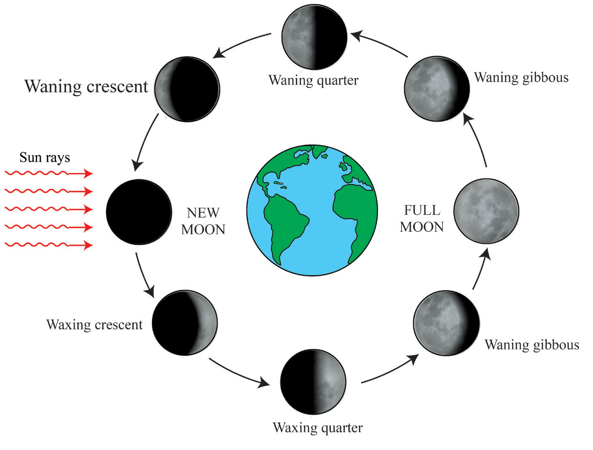
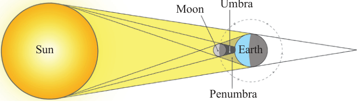

Figure 3.9: Phases of the moon(b) Solar eclipse
The solar eclipse is also known as the eclipse of the sun. It occurs when the moon passes between the Earth and the Sun. The moon casts its shadow over the earth (Figure 3.10). Eclipse of the sun is partial when only part of the earth is obscured by the shadow of the moon. The portion of the shadow that results when the light from the Sun is partially blocked is called Penumbra.
Moreover, when the light from the sun is completely blocked it forms the shadow called Umbra.
Tanzania has witnessed solar eclipse in different times. For example, some parts of Tanzania witnessed a total eclipse of the sun on 23rd October 1976. In addition, partial eclipses occurred on 19th April 1977 and 14th October 2000. Meanwhile on 1st September, 2016, a total solar eclipse was witnessed in Rujewa, Mbarali District in Mbeya Region.

Figure 3.10: Solar eclipse